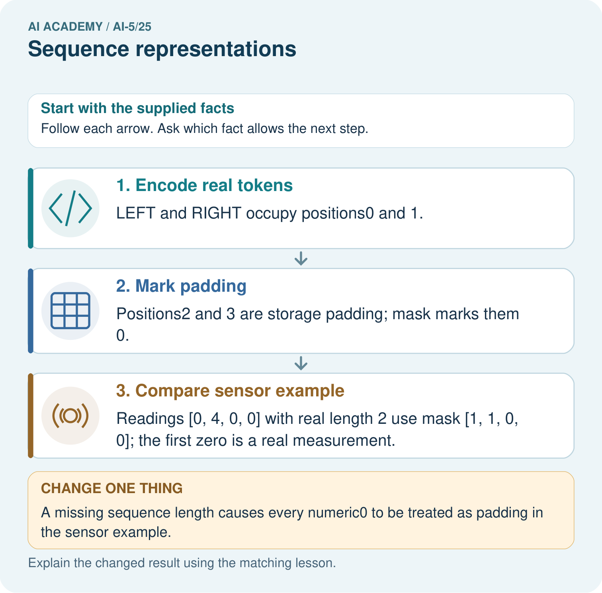

AI Academy · Level 5 · Grade 10 · Week 25 · Teacher guide
Sequence representations
Learn to understand, design, build, test and explain AI systems responsibly.
Project: Image-pattern Network Investigation
Teacher guide · 1 of 7
Prepare the purpose, prerequisites and materials
Teach the learning cycle
Primary target: Encode an ordered sequence with an explicit vocabulary
| Session | Sequence and minutes | Resources |
|---|---|---|
| Session 1 · Understand · 45 min | 0–7: recall and prerequisite; 7–15: inspect the concrete case and predict; 15–30: teacher models the worked trace; 30–40: learners explain a step using the text and visual; 40–45: check the core idea. | Sections 1–6; record the brief recall in the workbook. |
| Session 2 · Practise · 45 min | 0–5: retrieve the procedure; 5–15: W2 completion practice; 15–23: explain and check with a partner; 23–30: each learner answers the misconception check; 30–40: targeted reteaching or a harder variation; 40–45: prepare the investigation. | Sections 7–10; use the matching workbook W2 and misconception check. |
| Session 3 · Investigate and transfer · 45 min | 0–5: retrieve the decision rule; 5–20: investigate or trace; 20–30: start the independent case; 30–38: connect the project; 38–43: act on feedback; 43–45: plan the return check. | Sections 9 and 11–14. Give extra time to finish the full task set; use Section 15 when the week includes a coding lab. |
This is a starting allocation of 135 minutes, not a validated duration. Preserve all named topics. Schedule extra time for connected examples, the full investigation, independent cases and project building. Repeated copies of a case share one recorded attempt; they are not new evidence.
Retrieval answer guidance
Augmentation and leakage
Without opening the old lesson, explain one key idea from Augmentation and leakage. Give an example and a mistake that the idea helps you avoid.
Look for: Check whether a transformation preserves the task label
Reference example, not the only acceptable wording: Teacher explanation: Original d = -2 and class 0. Row swapping leaves d = -2 and class 0. Column swapping gives rows [1, 0], [1, 0], d = 2 and class 1.
Pooling and spatial information
Without opening the old lesson, explain one key idea from Pooling and spatial information. Give an example and a mistake that the idea helps you avoid.
Look for: Compute max and mean pooling under an explicit window rule
Reference example, not the only acceptable wording: Teacher explanation: Values are 1, 3, 2 and 7. Sum is 13, maximum 7 and mean 3.25. Each pooled output has shape 2 by 2.
Learned representations
Without opening the old lesson, explain one key idea from Learned representations. Give an example and a mistake that the idea helps you avoid.
Look for: Trace an input through a hidden representation and a decision rule
Reference example, not the only acceptable wording: Teacher explanation: The vectors are [5, 0], [0, 5] and [0, 0]. Predictions are 1, 0 and 0. Equal width and height does not satisfy strictly greater.
Use two 45-minute sessions. Arrange event cards physically before using IDs. Keep token identifiers separate from the sensor measurements used for meaningful mean calculations. The encoder is a fixed classroom schema, not a learned language model. All indexing is zero-based and all masks in the examples are contiguous right-padding masks.
Outcomes
Encode an ordered sequence with an explicit vocabulary
Use padding and a mask without inventing real events
Identify information lost by counts unknown symbols and truncation
Preparation
Printed lesson and workbook; paper and pencil
Calculator and optional local Python 3 editor; no packages or AI accounts needed
Use the fictional examples supplied; prepare the fresh retry before class
Prerequisite answer
Pooling discards detail. A maximum can preserve the largest value while losing its location and the other values; identical summaries do not imply identical inputs.
End goal for the pictorial case
By the end, I can explain sequence representations using a traced example and a stated limitation.
This added worked case illustrates the week’s main idea. Retain all original and connected topics; schedule its practice within the teaching cycle.
Teacher guide · 2 of 7
Explain and model the mechanism
Use fictional robot event logs whose symbols are GO, TURN and STOP. The task asks whether the final real event is STOP. This is a representation exercise, not a claim that an event log proves a robot is safe. GO then STOP and STOP then GO contain the same symbols but have different final events.
A count vector discards order, so no deterministic rule using only the first two count vectors can distinguish their answers. A sequence of IDs preserves order if we retain each position. Declare the vocabulary: PAD = 0, UNK = 1, GO = 2, TURN = 3 and STOP = 4. PAD is reserved for added storage positions; UNK represents a real but unrecognised symbol.
IDs are names, not measured amounts. STOP having ID 4 does not make it twice as much as GO with ID 2. Changing the vocabulary requires changing every consumer consistently. Do not interpret numerical distance between IDs as semantic similarity.
Store each log in four positions, padding on the right. A mask value 1 marks a real position and 0 marks padding. The encoder rejects empty logs, logs longer than four, and literal reserved markers. Other unrecognised symbols become UNK and still receive mask 1.
The code assumes a list of symbol strings and uses exact spelling. It does not fit a vocabulary from data. If a future project fits vocabulary choices or frequency cutoffs, derive those choices from training data and apply the saved encoding consistently to validation and final cases.
| Term | Meaning |
|---|---|
| Sequence | An ordered list of elements in which positions can matter |
| Token ID | A numerical identifier assigned to a symbol by a vocabulary |
| Padding | Placeholder positions added to make stored sequences the same length |
| Mask | A list marking which stored positions are real inputs and which are placeholders |
A padded log still has two real events
Guided: TURN STOP becomes IDs [3, 4, 0, 0] and mask [1, 1, 0, 0]. Length is 2, so final real position is 1 with ID 4, STOP. Position 3 is PAD. Exit: the full five-event log answers Yes, but its first four events end in TURN and answer No. Rejection makes the unsupported length visible and avoids silently changing the question.
Model the reasoning aloud
Use the complete worked example below before asking learners to complete W2. Reveal a small part, invite a prediction, then explain the deciding step. These teacher notes contain solutions; do not reveal the independent case answer during modelling.
A padded log still has two real events
| Thinking move | Teacher prompt |
|---|---|
| Plan | What is given? What is the question? Which procedure fits these facts? |
| Do | Point to each input and intermediate step in the worked trace. Name the rule that allows the next step. |
| Check | Does the output answer the question? Which assumption or limitation prevents a larger claim? |
Use the diagram and verbal explanation together. Ask learners to match a sentence to a specific visual step; do not assign learners fixed visual or auditory learning styles.
A pictorial worked case: Sequence representations
Distinguish padding positions from meaningful zero sensor readings.
The facts we will use
Toy tokensPAD0, UNK1, LEFT2, RIGHT3; stored length4. SequenceLEFT RIGHT encodes [2, 3, 0, 0], mask [1, 1, 0, 0].
All inputs and outcomes in this worked example are invented classroom data; no real model run is claimed.

Read the picture one step at a time
Why this result follows
Sequence values and sequence length are separate information. Padding fills unused storage positions so arrays can share a size; a mask marks which positions are real. A real sensor reading can be zero, just like a padding value. Keep the length or mask rather than inferring presence from the number alone. Token IDs are identifiers, not measured magnitudes.
What this example does not establish
Token padding rules need not apply to sensor values. Document sequence lengths, vocabulary and unknown-token handling.
Change one thing in the pictured case
Change: A missing sequence length causes every numeric0 to be treated as padding in the sensor example.
Prediction: The first real sensor reading is incorrectly discarded.
Reason: Its numeric value is 0, but its position is real according to the declared length.
Ask while showing the picture
Cover the result. Ask learners to name the inputs and predict the next step. Uncover one step, connect the icon to the actual procedure, and explain its evidence. Then change the supplied condition and compare. The picture is a representation; it does not document execution of a real AI model.
Teacher guide · 3 of 7
Demonstrate and guide practice
| Time or stage | Teacher action |
|---|---|
| Session 1 start to 7 minutes | Retrieve representation collisions and compare GO STOP with STOP GO. |
| 7 to 18 minutes | Declare the vocabulary and task, then complete W1 and W2. |
| 18 to 32 minutes | Trace the encoder, including a real unknown event and its mask. |
| 32 to 45 minutes | Use W3 to distinguish lost unknown identity from artificial padding. |
| Session 2 start to 8 minutes | Complete the guided final-position calculation and compare stored versus real length. |
| 8 to 20 minutes | Calculate masked sensor means, including a measured zero, and explain the empty-mask boundary. |
| 20 to 35 minutes | Collect W4 independently, checking the new vocabulary and five-position layout. |
| 35 to 45 minutes | Use W5 and the exit response to audit truncation, then administer the fresh retry. |
Use the worked example in Sections 3 and 6. Collect a prediction before revealing its result; ask the learner to point to each intermediate fact.
Provide a ledger with position, original symbol, ID and mask. Use separate coloured or labelled cards for real unknowns and placeholders without relying on colour alone. Extension: enumerate all logs of length one through four over GO, TURN and STOP, verify encode-and-decode recovery, and find count-vector collisions with different final-event answers.
Reduce help deliberately
Completion task: Give two logs made of exactly GO, TURN and STOP once each that have equal count vectors but different answers to whether the final event is STOP.
Teacher check: Teacher explanation: For example GO TURN STOP and STOP TURN GO both have count vector [1, 1, 1]. The first answer is Yes and the second No. Counts alone cannot distinguish them.
Start by identifying the given inputs together. Leave the intermediate steps blank. If needed, model one step, then withdraw that help on the next step. Move to a full trace only when the partial trace is understood. For partners, alternate explainer and checker; collect a response from every learner before discussion.
Individual reasoning check
Use the worked case for Sequence representations. Proposed explanation: “Larger token IDs mean more of a concept”. Decide whether this explanation is supported. Point to the step or supplied fact that decides; explain your repair if needed.
Expected correction: IDs identify symbols; their arithmetic sizes have no declared semantic meaning.
Collect explanations, not only yes/no votes. If a misunderstanding is common, re-model the relevant step for the class. If it affects a few learners, give a short targeted group explanation while others solve a more demanding variation.
Pictorial practice question
Which record lets the program distinguish the first and last zeros? Point to the relevant step in the picture, then write the changed result and the rule or evidence that supports it.
Reasoned teacher answer
The explicit real length 2 or equivalent mask. Values alone cannot tell a genuine zero measurement from a padding zero. Changed-case check: The first real sensor reading is incorrectly discarded. Its numeric value is 0, but its position is real according to the declared length.
Changed-case reasoning: The first real sensor reading is incorrectly discarded. Its numeric value is 0, but its position is real according to the declared length.
Collect each learner’s explanation before discussion. Use the first missing connection between input, deciding step and result to choose support. This question is worked-case practice, not fresh mastery evidence.
Teacher guide · 4 of 7
Run the investigation and diagnose misconceptions
Larger token IDs mean more of a concept: IDs identify symbols; their arithmetic sizes have no declared semantic meaning.
Zero always means missing data: A measured zero can be real; the mask determines which positions contribute.
A mask automatically fixes every model computation: The relevant operation must actually use the mask, and later aggregation can still discard order.
Use Section 9 for the evidence ledger. Add a boundary or missing-input case and record the expected response before checking. More successful repeats of one case do not establish wider coverage.
Match the support to the first error
| What the response shows | Next teaching action |
|---|---|
| Missing or misread facts | Read the case aloud, mark supplied versus unknown facts, and let the learner restate it. |
| Wrong procedure | Return to the deciding step in the worked case. Contrast it with the proposed incorrect explanation. |
| Arithmetic or implementation error | Trace intermediate values or lines; preserve the first mismatch and retry that step. |
| Correct result without a reason | Ask for a trace and a changed case before marking independent understanding. |
| An unsupported wider claim | Ask which supplied evidence supports the claim and which further observation would be needed. |
Offer an oral explanation, drawing, enlarged visual or fewer examples when that removes a reading/writing barrier. Keep the same reasoning goal. Stretch secure learners by changing a boundary or assumption and asking them to defend the effect, not simply by assigning more of the same questions.
Teacher guide · 5 of 7
Assess and explain the answers
Guided and exit questions
Guided: TURN STOP becomes IDs [3, 4, 0, 0] and mask [1, 1, 0, 0]. Length is 2, so final real position is 1 with ID 4, STOP. Position 3 is PAD. Exit: the full five-event log answers Yes, but its first four events end in TURN and answer No. Rejection makes the unsupported length visible and avoids silently changing the question.
W1 Encode and recover the final event
Encode GO TURN STOP using the lesson vocabulary and four positions. Give its mask, real length and final real event.
Teacher explanation: IDs are [2, 3, 4, 0], mask [1, 1, 1, 0], real length 3 and final real event STOP at position 2.
W2 Expose an order collision
Give two logs made of exactly GO, TURN and STOP once each that have equal count vectors but different answers to whether the final event is STOP.
Teacher explanation: For example GO TURN STOP and STOP TURN GO both have count vector [1, 1, 1]. The first answer is Yes and the second No. Counts alone cannot distinguish them.
W3 Separate unknown from padding
Encode WAIT GO. Which positions are real? Compare it with PAUSE GO, and state what information the encoding loses.
Teacher explanation: Both encode as [1, 2, 0, 0] with mask [1, 1, 0, 0]. Positions 0 and 1 are real. UNK at position 0 loses whether the symbol was WAIT or PAUSE; padding is only at positions 2 and 3.
W4 Apply a fresh schema independently
Use PAD = 0, UNK = 1, OPEN = 2, CLOSE = 3, CHECK = 4 and five stored positions. Encode OPEN CHECK CLOSE and give its mask and final real position. Separately, sensor values [0, 6, 3, 0, 0] have that same mask. Calculate their masked mean and the incorrect mean over all five slots.
Teacher explanation: IDs [2, 4, 3, 0, 0], mask [1, 1, 1, 0, 0]; final real position 2 contains CLOSE. Masked sensor mean is (0 + 6 + 3) / 3 = 3. Unmasked mean is 9 / 5 = 1.8. The measured zero must count in the denominator.
W5 Audit length and empty input
The encoder receives five events ending in STOP, then an empty log. What should it do under the lesson contract? Why should a program not simply crop the first and assume a final event for the second?
Teacher explanation: It rejects both: one exceeds four real events and the other has none. Cropping can remove the final event and change the task answer. An empty log has no final real position; the program needs an explicit policy rather than an invented event.
Independent assessment and fresh retry
W4 requires IDs [2, 4, 3, 0, 0], mask [1, 1, 1, 0, 0], final index 2, masked mean 3 and unmasked mean 1.8. Fresh retry: use the same five-position vocabulary for CHECK OPEN. IDs are [4, 2, 0, 0, 0], mask [1, 1, 0, 0, 0], final index 1 is OPEN. Sensor values [8, 0, 0, 0, 0] with that mask have mean 4, not 8 or 1.6.
Assess independent transfer
Selected case: Use PAD = 0, UNK = 1, OPEN = 2, CLOSE = 3, CHECK = 4 and five stored positions. Encode OPEN CHECK CLOSE and give its mask and final real position. Separately, sensor values [0, 6, 3, 0, 0] have that same mask. Calculate their masked mean and the incorrect mean over all five slots.
Selected case answer
Teacher explanation: IDs [2, 4, 3, 0, 0], mask [1, 1, 1, 0, 0]; final real position 2 contains CLOSE. Masked sensor mean is (0 + 6 + 3) / 3 = 3. Unmasked mean is 9 / 5 = 1.8. The measured zero must count in the denominator.
| Dimension | Evidence required |
|---|---|
| Explanation | Names the applicable idea or procedure and ties it to the supplied facts. |
| Trace and result | Preserves the given inputs and shows the relevant intermediate steps; distinguishes a prediction from an observed execution. |
| Limits | States the assumptions, missing evidence or conditions under which the result would change. |
Record each dimension as not yet, with support, or independent. Accept a valid alternative procedure with a defensible trace. Do not penalise an honestly recorded model failure if the learner correctly explains its evidence and limits.
Feedback that the learner uses
Name the earliest unsupported step and give one action to repair it. Have the learner make that repair now and explain why. Then assess the relevant skill on a fresh, fully specified case. Confirm it was not previously practised with feedback; solve and check the new case before assigning it. A follow-up design prompt is a starting brief, not automatically an equivalent test.
Teacher guide · 6 of 7
Connect the project, support and next lesson
Add a labelled sequence representations evidence sheet to Image-pattern Network Investigation. Show how you can encode an ordered sequence with an explicit vocabulary. Use the supplied fictional case and keep its inputs, intermediate steps, calculation or prediction, and limitation. Connect this record to last week’s record; a matching answer without a trace is insufficient.
Provide a ledger with position, original symbol, ID and mask. Use separate coloured or labelled cards for real unknowns and placeholders without relying on colour alone. Extension: enumerate all logs of length one through four over GO, TURN and STOP, verify encode-and-decode recovery, and find count-vector collisions with different final-event answers.
Week 26 explores embeddings and neighbourhoods, including why a vector representation is different from an arbitrary token ID.
Retain the project ledger and assess a changed case after support. Check the relevant prerequisite before carrying this component forward.
Plan the delayed return
Suggested return points in this level: ai-5/26, ai-5/28, ai-5/31. Use actual classroom dates, adjusting for holidays and gaps. One, three and six teaching weeks are scheduling choices, not a claimed optimal spacing.
At a delayed check, ask for the idea from memory and a changed application. Compare with the earlier independent response and record support used. For a new level, revisit the previous capstone before checking the new prerequisites.
| Record | Teacher evidence |
|---|---|
| Learner code and date | |
| Concept and case used; prior exposure | |
| Explanation / trace / limits | |
| Support and first repair | |
| Changed case and delayed outcome | |
| Next teaching action |
Use the evidence to choose reteaching or the next step. A completed page, confidence rating or attractive project does not by itself demonstrate understanding.
Project evidence from this case
For your Image-pattern Network Investigation, save the input, procedure, observed result and limitation of this check. Label this worked example as practice; use a different, previously unreviewed case when checking independent understanding.
Teacher guide · 7 of 7
Prepare, teach and assess
Teaching target: Encode an ordered sequence with an explicit vocabulary
Prepare the labelled worked-case picture, the matching workbook, fictional input cards and a place for individual responses. Check a local Python 3 environment before class; have a paper-trace version ready.
| Session | Plan | Resources |
|---|---|---|
| Session 1 · Understand · 45 min | 0–7: recall and prerequisite; 7–15: inspect the concrete case and predict; 15–30: teacher models the worked trace; 30–40: learners explain a step using the text and visual; 40–45: check the core idea. | Sections 1–6; record the brief recall in the workbook. |
| Session 2 · Practise · 45 min | 0–5: retrieve the procedure; 5–15: W2 completion practice; 15–23: explain and check with a partner; 23–30: each learner answers the misconception check; 30–40: targeted reteaching or a harder variation; 40–45: prepare the investigation. | Sections 7–10; use the matching workbook W2 and misconception check. |
| Session 3 · Investigate and transfer · 45 min | 0–5: retrieve the decision rule; 5–20: investigate or trace; 20–30: start the independent case; 30–38: connect the project; 38–43: act on feedback; 43–45: plan the return check. | Sections 9 and 11–14. Give extra time to finish the full task set; use Section 15 when the week includes a coding lab. |
Before class, solve the supported practice: Give two logs made of exactly GO, TURN and STOP once each that have equal count vectors but different answers to whether the final event is STOP.
Reasoned practice answer: Teacher explanation: For example GO TURN STOP and STOP TURN GO both have count vector [1, 1, 1]. The first answer is Yes and the second No. Counts alone cannot distinguish them.
Check every learner before discussion: Use the worked case for Sequence representations. Proposed explanation: “Larger token IDs mean more of a concept”. Decide whether this explanation is supported. Point to the step or supplied fact that decides; explain your repair if needed.
Misconception repair: IDs identify symbols; their arithmetic sizes have no declared semantic meaning.
Support: read the exact case aloud, enlarge the labelled picture, supply input cards and model only the first deciding step. Accept a spoken explanation or drawing; retain the reasoning goal.
Extension: A missing sequence length causes every numeric0 to be treated as padding in the sensor example. Require a prediction and a reason before comparing. Expected result: The first real sensor reading is incorrectly discarded. Reason: Its numeric value is 0, but its position is real according to the declared length.
Independent assessment: withhold the reserved answer until the learner has attempted the new case. Record support separately from correctness.
| Criterion | Not yet | With support | Independent |
|---|---|---|---|
| Explanation | Names an answer without a deciding fact | Uses a hint to link fact and decision | Explains the deciding fact in own words |
| Trace or test | Cannot connect input and result | Completes steps with prompts | Traces or tests a changed case accurately |
| Limits and revision | Claims more than evidence supports | Names a limit after a prompt | States a defensible limit and useful next test |
Project checkpoint: Prepare the demonstration. Gather reproducible instructions, evidence, access checks and remaining limitations.
Use the weekly teacher answer for topic-specific reasoning. A saved progress tick is an activity record; judge mastery from the learner’s explanation and evidence.